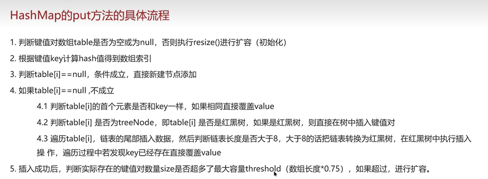
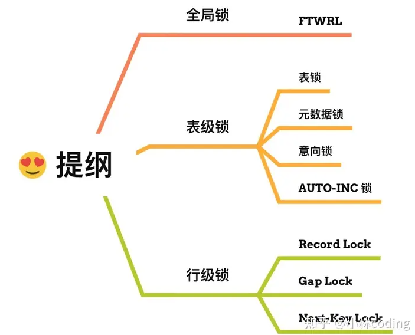

八股
Linux 命令
- cpu 使用情况查询
top - 打印进程中所有线程
ps H -eo pid, tid , %cpu | grep pid- -eo 后面跟着一系列的格式控制符
- H 显示进程数
jstat pid查看进程中线程命令nohup命令会忽略挂断信号，终端退出后仍然运行。&终端退出后仍然运行，参数启动的进程不会忽略挂断信号。nc是读取写入 TCP、UDP 命令nc -l监听特定端口netstat -tulnt:tcp u:upd l：正在监听的端口号 n:显示数字地址和端口号，而不是尝试解析为名称lsof -i -n -P | grep LISTEN- -i 列出网络连接
- -n 不解析服务名称
- -P 显示端口号
- grep LISTEN 过滤出正在监听的连接
lsof是一个列出打开文件的工具
Java 基础
ArrayList（动态数组）
List<> list=new ArrayList<>(); 初始化： 1、带初始化容量 2、无参 3、Collection
- 添加 list.add()
- 扩容 0-if（minc<10?10:minc）-10 容量不够？newc=oldc+0.5oldc； 数组拷贝 Arrays.copyof() aslist 受影响（不创建新的对象） toarray 不受影响（创建新对象）
HashMap
HashMap 是 Java 集合框架中的一个类，它实现了 Map 接口，并使用哈希表来存储键值对。
- 当插入一个键值对时，
HashMap使用键（key）的hashCode()方法来计算一个哈希码。 - 这个哈希码被用来确定键值对在哈希表中的存储位置（称为“桶”或“槽”）。
- 如果两个键的哈希码相同（称为“哈希冲突”），
HashMap会使用链表或红黑树（在 Java 8 及更高版本中）来存储这些具有相同哈希码但不相等的键。 - 查找、删除和更新操作都基于键的哈希码进行。
红黑树
是一种平衡二叉树。虽然平衡二叉树和红黑树在查询、插入和删除操作的时间复杂度上都是 O(log n)，但由于红黑树的平衡要求相对宽松，它在实际应用中通常能够展现出更高的性能，特别是在大量数据频繁插入和删除的场景下。 查找、添加、删除 O(logn)
散列表
hash 冲突：拉链法 添加：O（1） 查找：
- 单链表：最坏 O（n）
- 红黑树：O（logn）：抵抗 dos 攻击
初始化
懒加载——初始化时才加载
put

寻址算法
计算 hash，二次 hash，右移 16 位^（hash^hash>>>16）分散，mod 数组长度。
关键字
static 和 final 的区别
- static 可以声明变量、方法和代码块，static 声明的变量是属于类的而不是属于实例的，在类加载时初始化，但是 static 声明的变量是可以修改的。
- final 用于声明不可变得类、变量、实体。用 final 修饰的变量等于常量赋值后不能修改。用 final 修饰的方法不能被子类重写。用 final 修饰的类不能被继承。
try-catch-finally，在捕获异常后 finally 还会执行吗？在 try 中 return 0，finally 还会执行吗？
- try-catch-finally 用于捕获异常，
try用于包裹可能抛出异常的代码块。catch用于捕获try块中抛出的异常，并提供相应的处理逻辑。finally块中的代码无论是否抛出异常都会被执行，通常用于释放资源或执行清理操作。 - 如果在
try块中使用return语句，那么finally块仍然会被执行。
Integer、new Integer、Integer.ValueOf()和 int 的区别
Integer fir=1;
Integer snd=new Integer(1);
System.out.println(fir==snd);//false
Systemout.println(fir==new Integer(1));//false两个对象比较用==永远是false
System.out.println(fir==Integer.valueof(1));//ture因为<127valueof()直接读取缓存中的职位1的对象
Integer end=256;
System.out.println(end==Integer.valueof(256));//false因为>127
- 两个 new Integer() 变量比较 ，永远是 false 因为 new 生成的是两个对象，其内存地址不同
- Integer 变量 和 new Integer()变量比较 ，永远为 false。因为 Integer 变量指向的是 java 常量池中的对象， 而 new Integer() 的变量指向堆中新建的对象，两者在内存中的地址不同。
- Integer i = 100 在编译时，会翻译成为 Integer i = Integer.valueOf(100)。java 对于-128 到 127 之间的数，会进行缓存。所以 Integer i = 127 时，会将 127 进行缓存，下次再写 Integer j = 127 时，就会直接从缓存中取，就不会 new 了。
- 两个 Integer 变量比较，如果两个变量的值在区间-128 到 127 之间，则比较结果为 true，如果两个变量的值不在此区间，则比较结果为 false 。
- int 变量 与 Integer、 new Integer() 比较时，只要两个的值是相等，则为 true 因为包装类 Integer 和 基本数据类型 int 比较时，java 会自动拆包装为 int ，然后进行比较，实际上就变为两个 int 变量的比较。
int 和 Integer 区别
- int:
- 基本数据类型
- 存储在栈中，不需要来及回收
- 可以用==进行比较
- Integer
- 类对象
- 存储在堆中，需要垃圾回收
- 常量池：Java 为
Integer类型的值在 -128 到 127 之间的对象创建了一个常量池。当你创建这些范围内的Integer对象时，Java 会从常量池中返回已存在的对象引用，而不是创建一个新的对象。（比如使用自动拆装箱和 valueOf（）方法） - 用 equal（）进行比较
equal（）和==的区别
- equal（）比较了两个对象的内容是否相同。
- == 运算符：==用来比较两个对象的地址是否相等。对于基本数据类型（如 int, char, boolean 等），== 用于比较它们的值是否相等。
String str1 = new String("hello");
String str2 = new String("hello");
System.out.println(str1 == str2); // 输出 false，因为 str1 和 str2 指向不同的对象
String str3 = "hello";
String str4 = "hello";
System.out.println(str3 == str4); // 输出 true，因为 str3 和 str4 指向字符串常量池中的同一个对象
Hashcode（）和 Hashmap 的区别
- HashMap 是一个类，它使用哈希表数据结构来存储键值对，并提供了高效的插入、查找和删除操作。hashMap 判断一个对象是否相等，首先通过比较对象的 hashcode 值是否相同，若是相同，再比较 equals 是否相同，若是不同，则可判定两个对象为不同的对象。
hashCode()方法是HashMap确定键值对在哈希表中存储位置的关键。 - hashCode() 方法返回一个整数，这个整数被称为“哈希码”。这个哈希码是根据对象的内存地址或其他属性计算得出的。
JVM
JVM 组成
类加载器
GC
频繁 fullGC：
当老年代（Old Generation）空间满了，Java 虚拟机（JVM）就会触发 Full GC（Full Garbage Collection）。
为了避免老年代空间满而频繁触发 Full GC，可以采取以下一些策略：
- 优化内存分配 ：通过调整新生代和老年代的大小比例，使内存分配更加合理。
- 减少大对象的创建 ：大对象会直接进入老年代，过多的大对象会快速填满老年代空间。（大对象直接进入老年代是因为它们在新生代没有足够的空间来存储）
- 避免内存泄漏 ：内存泄漏会导致老年代空间被无效对象长期占用，无法释放。
- 使用对象池 ：对于频繁创建和销毁的对象，可以使用对象池来复用对象，减少垃圾回收的压力。
- 进行 GC 调优 ：通过调整 JVM 的垃圾回收算法、触发条件等参数来优化 GC 的性能。
- 使用性能监控工具 ：监控和分析 GC 日志，了解 GC 的频率、时间和原因，以便进行相应的优化。
JVM 调优
重要参数
堆空间
-Xms：初始化大小 -Xmx：最大大小
虚拟机栈
-Xss：每个线程栈的大小-256K
enden 和 survivor
-XXSurvivorRatio=8//Survivor 占 8/10 -XX:MaxTenuringThreshold=15//年轻代升老年代的复制阈值
垃圾回收器
-XX:+UserG1GC
调优工具
jstat pid查看进程中线程命令
内存泄露（堆）
排查思路：（大对象没有被回收）
- dump 内存快照（jmap）
- 参数生成 dump
cpu 飙高
- cpu 使用情况查询
top - 打印进程中所有线程
ps H -eo pid, tid , %cpu | grep pid jstat pid查看进程中线程命令
多线程
线程
- 线程和进程的区别：
1、进程是资源分配的最小单位、线程是不拥有资源（I/O 设备）是 cpu 独立调度的最小单位。进程中有多个线程
2、进程独立拥有内存，一个进程中的多个线程共享进程的堆和方法区
3、线程切换上下文的效率更高
-
创建线程
- 继承 Thread
- 实现 Runable 接口，包装在 Thread 中，没有返回值
- 实现 Callable 接口，有返回值，可以抛异常，配合 Futuretask 类，将 FutureTask 包装在 Thread 中
-
同步执行
- join（t1）：等待 t1 线程执行结束
- notify():随机唤醒一个线程
- notifyALL():唤醒所有线程
- wait()VSsleep():
-
锁
- Synchronized
- Lock
- Synchronized VS Lock
- 释放
- 悲观锁
- 打断、超时、公平锁
线程池
工作流程
实现：线程池
重要参数
-
核心线程数
-
最大线程数
-
线程空闲时间：当线程池中的线程数超过核心线程数时，多余的空闲线程在此参数指定的时间内如果没有接收到新的任务，则会被销毁。
-
时间单位
-
工作队列：先进先出、优先级
-
拒绝策略：直接丢弃
参数选择
1、任务类型：获取商品详情可能是 IO 密集型任务。2*n+1（n 是 cpu 核数） 2、资源限制：我们的服务器有 8 个 CPU 核心，并且有足够的内存和 IO 资源。因此，我们可以将最大线程数量设置为 CPU 核心数的 2-4 倍。 3、响应时间要求：决定核心线程数 4、负载预测：增加核心线程数量来应对高峰负载。
类型
静态：固定最大（核心）线程数
单线程：最大（核心）线程数为 1
可缓存：
不适用 Executors 创建线程池，因为 Executors 创建线程池的队列长度为 Integer.MAX_VALUE，容易堆积请求。而是使用 new 一个 ThreadPoolExecutor 对象来创建线程池
使用场景
异步加载商品详情页面
TreadLocal
安全问题：
线程安全性：
多线程环境下存在线程安全性问题，需要确保共享资源的访问是线程安全的，避免出现竞态条件和数据一致性问题。可以通过加锁、使用线程安全的数据结构等方式来保证线程安全性。
1、加锁：sychonized、Lock
2、线程安全数据结构和集合：ConcurrentHashMap、CopyOnWriteArrayList
3、原子操作：原子操作类：AtomicInteger、AtomicLong
死锁和饥饿：
在多线程编程中，存在死锁和饥饿的风险。死锁指的是两个或多个线程相互等待对方持有的资源，导致程序无法继续执行；饥饿指的是某个线程长时间无法获取到所需的资源，无法执行任务。需要设计合理的锁定策略和资源分配策略，避免死锁和饥饿的发生。
1、加锁顺序：确保所有线程都按照相同的顺序获取锁，从而避免死锁的发生。
2、避免嵌套锁：避免持有锁的时候去请求锁
3、资源分配策略：确保资源能够及时释放和回收，避免资源被长时间占用
4、超时策略：长时间不获得资源就放弃重试
锁
synchronized 和 Lock 在 Java 中都用于实现同步机制，但它们在多个方面存在一些区别。以下是它们之间的一些主要差异：
- 存在层次 ：
synchronized是 Java 的一个关键字，它在 JVM 层面上由内置语言实现。Lock是一个接口，以及相关的实现类（如ReentrantLock），在 Java SE 5 之后的并发包中被引入，用于实现锁功能。
- 锁的获取与释放 ：
- 使用
synchronized关键字时，锁的获取和释放是隐式的。当线程进入synchronized代码块或方法时，它会自动获取锁；当线程退出synchronized代码块或方法时，锁会自动释放。 - 使用
Lock接口时，锁的获取和释放是显式的。线程需要调用lock()方法来获取锁，并在适当的时候调用unlock()方法来释放锁。
- 锁的类型 synchronized 提供的是非中断锁（必须等待线程执行完成释放锁）、不可判断（无法直接判断锁是否被持有）和非公平锁（等待的线程获取锁的顺序是不确定的）。 Lock 接口提供的锁可以是可中断的（允许等待锁的线程在等待过程中被中断）、可判断的（可以通过方法判断锁是否被持有）和公平的（等待的线程按照请求锁的顺序获取锁）。
MySQL
SQL 语句
视图
就是一个窗口，可以连表查询
create view
as select
from
where
with check option
AS SELECT 通常与 CREATE VIEW 或 CREATE TABLE 语句一起使用，用于定义新视图或表的结构和内容。在这种情况下，AS SELECT 后面的查询定义了新视图或表的数据和列。
inner join 和 outer join 的区别
- 都用于连表查询。
- inner join 时内联，用于选择两个表中满足条件的交集的部分，如果不满足条件则不返回。
- Outer Join 返回连接两个表后的所有记录，无论连接条件是否匹配。如果在连接条件上没有匹配的记录，则会生成一个包含 NULL 值的虚拟记录。
- left join，显示左边表中所有的数据，当右边的字段不满足条件时以 null 填充。left join、右外连接（Right Outer Join）和全外连接（Full Outer Join）三种形式，它们分别表示在连接过程中保留左表、右表或者两个表中的所有记录。
UNION
- union 会自动去除结果集中的重复行。
HAVING
having 子句用于对 GROUP BY 的结果进行过滤。与 WHERE 子句不同，WHERE 在数据分组之前进行过滤，而 HAVING 在数据分组之后进行过滤。HAVING 通常与聚合函数一起使用。
它们的执行顺序是：WHERE -> GROUP BY -> HAVING -> SELECT -> ORDER BY
顺序
SELECT 指定了要从表中检索哪些列。
FROM 指定了包含所需数据的表。
WHERE 用于过滤记录，即只选择满足特定条件的记录。
GROUP BY 用于将结果集按一个或多个列进行分组。
HAVING 用于过滤分组后的结果，通常与聚合函数一起使用。
ORDER BY 用于对结果集进行排序。
SQL 注入攻击
没有正确对用户输入进行过滤和转义，攻击者可以通过输入恶意的 SQL 代码来执行非授权的数据库操作。
MyBatisPlus 可以防止 SQL 注入攻击因为：
- 通过#{}接收参数，通过用户输入查询
- 封装了 Mapper 层和 service 层，自动参数化查询
- 可以配置 SQL 注入过滤器
流程
数据结构
日志
- redo log：redo log 是循环写
- bin log：追加写
命令
-- 创建表
CREATE TABLE account (
id INT PRIMARY KEY AUTO_INCREMENT,
NAME VARCHAR(10),
balance DOUBLE
);
-- 添加数据
INSERT INTO account (NAME, balance) VALUES ('zhangsan', 1000), ('lisi', 1000);
UPDATE account SET balance = 1000;
SELECT * FROM account;
-- 0. 开启事务
START TRANSACTION;
-- 1. 张三账户 -500
UPDATE account SET balance = balance - 500 WHERE NAME = 'zhangsan';
-- 2. 李四账户 +500
-- 出错了...
UPDATE account SET balance = balance + 500 WHERE NAME = 'lisi';
-- 发现执行没有问题，提交事务
COMMIT;
-- 发现出问题了，回滚事务
ROLLBACK;
锁

-
**全局锁：**整个数据库就处于只读状态了
-
表级锁： MySQL 中锁定粒度最大的一种锁（全局锁除外），是针对非索引字段加的锁，对当前操作的整张表加锁，实现简单，资源消耗也比较少，加锁快，不会出现死锁。不过，触发锁冲突的概率最高，高并发下效率极低。表级锁和存储引擎无关，MyISAM 和 InnoDB 引擎都支持表级锁。
- 读锁
- 写锁：读读共享、读写互斥、写写互斥（如果 where 中的条件没有命中索引，则升级为表锁）
- 元数据锁：MDL 锁主要用于保护数据库对象的元数据不被并发事务修改。
- 意向锁：意向锁的目的是为了快速判断表里是否有记录被加锁。在 InnoDB 中，当事务想要对表中的某个行加锁时，它首先需要在表上设置相应的意向锁。
-
行级锁： MySQL 中锁定粒度最小的一种锁，是 针对索引字段加的锁 ，只针对当前操作的行记录进行加锁。 行级锁能大大减少数据库操作的冲突。其加锁粒度最小，并发度高，但加锁的开销也最大，加锁慢，会出现死锁。行级锁和存储引擎有关，是在存储引擎层面实现的。
- 记录锁：读锁
select for update和写锁SELECT ... LOCK IN SHARE MODE，读读共享、读写互斥、写写互斥 - 间隙锁：锁住一个范围，防止幻读，开区间。间隙锁之间是兼容的，即两个事务可以同时持有包含共同间隙范围的间隙锁
- 临键锁：锁住一个范围包括记录本身。包含间隙锁+记录锁
- 记录锁：读锁
索引
索引是一种数据库的数据结构，在查找数据的时候可以通过对比索引来快速的找到数据，而不是扫描每个数据。
在 MySQL 中常用的索引结构有 B+树。
- b+树 VS 二叉树：平衡的多叉树，相比二叉树 B+树的层高低，IO 次数少。
- B+树 VS B 树：分支索引、叶子节点存数据，一个节点能容纳的索性项多，IO 次数少。叶子节点通过双向链表连接，方便顺序查找、扫库。
索引字段分类
- 聚簇索引主要是指数据与索引放到一块，叶子节点中有完整的数据行
- 非聚簇索引主要是指数据与索引不放到一块，叶子节点中一般存放数据行的主键，可能需要回表查询。
查找效率
- 覆盖索引：返回的列，必须在索引中全部能够找到
索引原则
- 数据量大
where索引的字段是查询比较频繁的字段- 经常用于 GROUP BY 和 ORDER BY 的字段，这样在查询的时候就不需要再去做一次排序了，因为我们都已经知道了建立索引之后在 B+Tree 中的记录都是排序好的
- 不常更新的表
索引失效
- 模糊查询
like - 联合索引在使用的时候没有遵循最左匹配法则
- 在添加索引的字段上进行了运算操作
- explain 执行计划分析索引是否失效
sql 优化
-
建表的时候
- 数据类型
- 如果是数值的话，bigint 存 id，用 varchar 存用户名，用 char（64）存订单编号。
- 数据类型
-
使用索引
- 订单表中：按照订单创建时间或者更新时间进行查询，可以为时间戳字段创建一个索引。
- 订单表中：如果订单经常根据用户进行查询，可以为用户 ID 创建一个索引。
- 订单表中：订单编号创建一个唯一索引
-
sql 语句的编写：
- 比如 SELECT 语句务必指明字段名称，不要直接使用 select * ，
- 还有就是要注意 SQL 语句避免造成索引失效的写法；
- 如果是聚合查询，尽量用 union all 代替 union ，union 会多一次过滤，效率比较低
- 如果是表关联的话，尽量使用 innerjoin ，不要使用用 left join right join，如 必须使用一定要以小表为驱动
-
主从复制
-
读写分离
-
分库分表
事务
一组 sql 命令，具有一致性、原子性、隔离性、持久性。
- 一致性：比如 A 给 B 转 50，A 的账户少 50，B 的账户就多 50.
- 原子性：一组命令要么全执行、要么全不执行。通过 undo log 保证。
- 隔离性：不受其他事务干扰 mvcc——隔离级别
- 持久性：数据要记录到磁盘中不能丢失。redo log
并发
- 脏读
- 不可重复读
- 幻读——解决：MVCC、锁
解决——隔离级别
- 读未提交
- 读提交
- 可重复读——read view
- 串行化
MVCC
- 在数据库实现隔离级别，解决读写冲突，原理依赖 readview，和记录中的两个隐藏字段：对当前数据版本修改的事务 id 和指向旧版本的指针。
- ReadView 数据快照
- 读提交：是在每个语句执行前都会重新生成一个 Read View，
- 「可重复读」：是启动事务时生成一个 Read View，然后整个事务期间都在用这个 Read View。
- 字段
开启事务
begin transactionstart transaction
提交事务 COMMIT
MyBatis
- 删除一条数据
- 定义 mapper 接口，包括一个用于删除数据的方法
- 写 XML 文件
<delete>标签 - 或者使用 MyBatis-plus 自定义一个 mapper 接口继承 BaseMapper，调用 basemapper 自带的 deleteById（）方法
Redis
基于内存的数据库，采用了 I/O 多路复用机制处理大量的客户端 Socket 请求，读写快，可以用于做 MySQL 的缓存、分布式锁等等
数据结构
- String
- List
- Hash：
- Set：集合，聚合计算（并集、交集、差集）场景，比如点赞、共同关注、抽奖活动等。
- ZSet：有序集合,热销排行榜
缓存问题
容量有限，设置一个过期时间定期清理缓存。
- 穿透：不存在
- 使用布隆过滤器快速判断数据是否存在
- 设置空或者默认值
- 击穿：某条数据过期
- 互斥锁方案（Redis 中使用 setNX 方法设置一个状态位，表示这是一种锁定状态），保证同一时间只有一个业务线程请求缓存，未能获取互斥锁的请求，要么等待锁释放后重新读取缓存，要么就返回空值或者默认值。
- 不给热点数据设置过期时间，由后台异步更新缓存，或者在热点数据准备要过期前，提前通知后台线程更新缓存以及重新设置过期时间；
- 雪崩：多条数据同时失效。——我们可以在原有的失效时间基础上增加一个随机值（比如 1 到 10 分钟）这样每个缓存的过期时间都不重复了
布隆过滤器：是一种数据结构，用于快速判断一个元素是否可能在一个集合中存在。它的核心思想是使用一系列的哈希函数和一个位数组。当一个元素被加入到布隆过滤器时，会对该元素进行多次哈希，然后将对应的位数组位置设置为 1。当需要判断一个元素是否在布隆过滤器中时，同样对该元素进行多次哈希，然后检查对应的位数组位置是否都为 1，如果都为 1，则表示可能存在；如果有任何一位为 0，则表示该元素一定不存在。
redis 持久化
数据一致性
先更新数据库，再删除缓存
- 问题：在删除缓存（第二个操作）的时候失败了，redis 中还是旧值
- 解决：
- 引入消息队列，把要删除的缓存数据放到队列中，通过消息队列的确认机制，如果删除失败就重试。
先删除缓存，再更新数据库
- 问题：「读 + 写」并发请求而造成缓存不一致
- 解决办法：「 延迟双删 」。先更新数据库，再删除缓存
线程问题
redis 单线程指的是「接收客户端请求->解析请求 ->进行数据读写等操作->发送数据给客户端」这个过程是由一个线程（主线程）来完成的 ，这也是我们常说 Redis 是单线程的原因。
但是， Redis 程序并不是单线程的 ，Redis 在启动的时候，是会 启动后台线程 （BIO）来进行关闭文件、AOF 刷盘、重写、释放内存等耗时操作。
集群
详解 Redis 三大集群模式，轻松实现高可用！ - 知乎 (zhihu.com)
Redis 集群的原理和搭建，一文带你详解 - 知乎 (zhihu.com)
RabbitMQ
商品上下架
生成订单——MQ——删除购物车
支付完成——mQ——更新订单状态，扣减库存（异步、解耦、削峰）
消息的等幂性
1、为每条消息分配一个全局唯一的 ID。在消费者端，维护一个已经处理过的消息 ID 的列表（或者存储在数据库中）。当接收到新消息时，首先检查其 ID 是否已存在于列表中。如果存在，则忽略该消息；如果不存在，则处理该消息并将其 ID 添加到列表中。
2、等幂性的操作，比如增加数量是等幂性，而设置数量不是。
3、去重表 每一条消息在表中都有一个 uniqueid 吗？
消息不丢失
Spring 框架
框架 = jar 包+配置文件

组件是映射到应用程序中所有可重用组件的 Java 对象，应该是可复用的功能对象！
反射
Java 反射机制的原理是基于类的加载机制和字节码的解析。当 JVM 加载一个类时，会将类的信息存储在方法区内存中，包括类的结构信息和字节码。通过反射，可以通过类的名称获取到对应的 Class 对象，并通过 Class 对象来获取类的信息和操作类的成员。
Ioc
不再是应用程序直接创建该对象，而是由 IoC 容器来创建和管理，即控制权由应用程序转移到 IoC 容器中。这种方式基本上是通过依赖查找的方式来实现的，即 IoC 容器维护着构成应用程序的对象，并负责创建这些对象。
优点：
- 对象之间的耦合度或者说依赖程度降低；
- 资源变的容易管理；比如你用 Spring 容器提供的话很容易就可以实现一个单例。
Ioc 容器
Spring IoC 容器，负责实例化、配置和组装 bean（组件）核心容器。容器通过读取配置元数据来获取有关要实例化、配置和组装组件的指令。
BeanFactory 接口提供了一种高级配置机制，能够管理任何类型的对象，它是 SpringIoC 容器标准化超接口！
- 工厂模式
- 抽象工厂：BeanFactory 接口（如 XmlBeanFactory、DefaultListableBeanFactory 等）
- 具体工厂：BeanFactory 实现类
- 产品：bean
ApplicationContext （一个接口）是 BeanFactory 的子接口。它扩展了以下功能：
可以通过 ApplicationContext context = new ClassPathXmlApplicationContext("applicationContext.xml");来创建一个 ioc 容器。
- 更容易与 Spring 的 AOP 功能集成
- 消息资源处理（用于国际化）
- 特定于应用程序给予此接口实现，例如 Web 应用程序的
WebApplicationContext
Bean 注入到容器中的方法
1、注解（@Component、@Service、@Autowired） 2、写 xml 文件 3、java@Configration 配置类中，用@Bean 注解标记的的对象。
管理（获取）Bean
- 根据提供的名称或类型信息，在内部缓存中查找对象。
- 如果对象不存在，则根据配置信息创建对象实例。
- 如果对象有依赖项，则递归地创建和注入这些依赖项。
- 返回创建好的对象实例给调用者。
Bean 对象生命周期
- 通过 beanDefinition 获取 bean 的定义
- 通过构造函数实例化 bean（开辟堆空间——半成品）
- bean 的依赖注入
- 实现 Aware 接口，有些方法需要重写
- bean 的后置处理器-前置
- 初始化方法
- bean 的后置处理器-后置（动态代理）
- 销毁 bean
单例 Bean 是线程安全的吗？
不是。 Service 类和 DAO 类无状态（不能修改），没有线程安全问题 如果在 bean 中定义可修改成员变量要考虑线程安全问题（多例，锁）
单例 bean 的优点
- 减少了新生成实例的消耗。新生成实例消耗包括两方面，第一，spring 会通过反射或者 cglib 来生成 bean 实例这都是耗性能的操作，其次给对象分配内存也会涉及复杂算法。
- 减少 jvm 垃圾回收
- 缓存快速获取
- 缺点： 由于所有请求都共享一个 bean 实例，所以这个 bean 要是有状态的一个 bean 的话可能在并发场景下出现问题
Di
在 Spring 中，DI 是通过 XML 配置文件或注解的方式实现的。它提供了三种形式的依赖注入：构造函数注入、Setter 方法注入和接口注入。
1- xml 方式
2- @Autowired：成员变量，构造函数。 默认至少有一个 bean（serviceImpl？） bean 的 id 是成员属性名
工作流程：
循环依赖
A 有一个属性 B，B 有一个属性 A,形成闭环
解决： 1.使用 @Lazy 注解：在需要循环依赖的 Bean 上添加 @Lazy 注解，延迟加载 Bean，避免直接初始化导致循环依赖。需要对象是才进行 bean 的创建。
2. 三级缓存
3. 使用代理对象：Spring 会创建代理对象来解决循环依赖问题。对于循环依赖的 Bean，Spring 会提前暴露一个半初始化（half-initialized）的 Bean，并在后续步骤中完成 Bean 的初始化。
AOP
- AOP 一种区别于 OOP 的编程思维，通过封装可重用模块（切面）用来完善和解决 OOP 的非核心代码冗余和不方便统一维护问题！（日志、事务）
- **代理技术（动态代理|静态代理）**是实现 AOP 思维编程的具体技术，但是自己使用动态代理实现代码比较繁琐！
- Spring AOP 框架，基于 AOP 编程思维，封装动态代理技术，简化动态代理技术实现的框架！SpringAOP 内部帮助我们实现动态代理，我们只需写少量的配置，指定生效范围即可,即可完成面向切面思维编程的实现！
动态代理：
它允许在运行时创建一个代理对象，用于替代原始对象，并且可以在代理对象的方法调用前后进行额外的处理。
- 实现：JDK 原生的实现方式，需要被代理的目标类必须实现接口。因为这个技术要求代理对象和目标对象实现同样的接口（兄弟两个拜把子模式）。
- cglib:
事务实现：
事务
- 事务失效的场景
SpringMVC 流程
Spring MVC 使用 Servlet API（如 HttpServletRequest 和 HttpServletResponse）来处理 HTTP 请求和响应，但它在这些 API 之上添加了一个更高级别的抽象层，使开发者能够更容易地处理 Web 请求和构建 Web 页面。
视图阶段（JSP） 前端控制器
处理器映射器
处理器适配器
视图解析器
渲染视图 前后端分离 前端控制器
处理器映射器（拦截器）
处理器适配器-处理器（controller 中的方法）
方法上有@ResponseBody
通过 HTTPMessageConverter 来返回 JSON 并响应
SpringBoot
为了简化 Spring 的手动配置依赖而发明的框架。springboot 能够简化 Spring 的配置是因为他的自动装配原理。
四大组件
四大组件分别是：starter， autoconfigure, CLI 以及 actuator
- starter
- mybatis-spring-boot-starter: Starter 帮我们封装好了所有需要的依赖,避免我们自己添加导致的一些 Jar包冲突或者缺少包的情况；
- autoconfigure
- Spring Boot CLI 是一个命令行使用 Spring Boot 的客户端工具；主要功能如下：初始化 Spring Boot 项目
- actuator 是 Spring Boot 的监控插件，本身提供了很多接口可以获取当前项目的各项运行状态指标。
SpringBoot 自动装配原理
- 什么是 SpringBoot 自动装配？ 答：自动装配是通过条件注解和启动器两个机制实现的。条件注解机制使 Spring Boot 能够根据一定的规则，在 classpath 中查找特定条件的 bean，并确定其是否应该自动配置。启动器则是一组依赖的集合，它包含了应用程序所需的各种库和配置，使得开发者可以快速地集成和使用这些功能。
一个 Springboot 程序的启动
@SpringBootApplication 注解标记的启动类运行了之后。（@EnableAutoConfiguration 注解用于开启自动配置功能。）
- Spring Boot 中 @EnableAutoConfiguration 中@import（{AutoConfigurationImportSelector.class}）会加载 META-INF/spring.factories文件，该文件中配置了所有自动装配的类。
- 根据条件注解(@ConditionalOnClass)和实现类，Spring Boot 筛选出符合条件的类，并根据类中的配置信息来自动配置 Bean。
- 配置完成后，Spring Boot 会将所有的 Bean 注册到容器中，以供其他组件使用。
-
Spring Boot 的启动过程： 在 Spring Boot 启动过程中，会自动扫描一个指定文件 spring.factrories,并加载这个文件下的自动配置类（
@Configuration注解标记，并通过@EnableAutoConfiguration注解启用自动装配）。通过条件注解的判断，选择合适的自动配置类进行装配。自动配置类中的 Bean 定义会被 Spring 容器自动加载，并根据条件进行实例化和装配。
计算机网络
HTTPS
- 端口号是默认的 443，它再用 DNS 解析域名，得到目标的 IP 地址，然后就可以使用三次握手与网站建立 TCP 连接了。
- 当服务器收到客户端的 HTTPS 请求后，会向客户端返回一个CA 证书。这个证书包含了服务器的公钥和一些其他信息，用于证明服务器的身份和公钥的合法性。
- 客户端生成对称密钥并使用公钥加密：如果证书验证成功，客户端会生成一个对称密钥，并使用从证书中获取的公钥对这个对称密钥进行加密。然后，客户端将这个加密后的对称密钥发送给服务器。
- 服务器解密对称密钥：服务器收到客户端发送的加密后的对称密钥后，会使用自己的私钥进行解密，得到客户端生成的对称密钥。
- 双方使用对称密钥进行通信
网络漏洞
- 跨站脚本（XSS）攻击：在网站中添加恶意脚本，访问非法网站，来窃取用户 cookie 等信息。攻击者就可以伪装成受害用户访问网站，执行未经授权的操作，如更改密码、发起交易等。
- HTTPOnly 标志设置 cooki
- 跨站请求伪造：攻击者利用用户在其他网站上的有效会话信息来伪造请求，并欺骗目标网站执行非本意的操作。为了防止 CSRF 攻击，网站开发者需要采取一系列的安全措施，如检查请求的来源（Referer 头）、添加随机令牌（CSRF Token）等。
- 请求头检查
- CSRF 令牌
- SQL 注入是一种攻击技术，攻击者通过在应用程序的输入字段中插入恶意的 SQL 代码
- MyBatis 查询参数化
- 对用户输入进行严格的验证
- 数据库权限
项目
基于 SpringBoot 和 SpringCloud 实现微服务架构。
SpringCloud：nacos、openfeign、gateway
nacos:
- 服务发现：当用户服务和订单服务启动时，它们会将自己的服务信息（如 IP 地址、端口号、服务名称等）注册到 Nacos 服务注册中心。注册的信息会存储在 Nacos 中，供其他服务查询和发现。当用户服务需要调用订单服务时，它会向 Nacos 服务注册中心发送请求，查询订单服务的地址信息。Nacos 会返回订单服务的地址列表给用户服务。用户服务会根据一定的策略（如负载均衡策略）选择一个地址进行调用。
- 配置管理：Nacos 可以作为一个配置中心，假设我们需要修改订单服务的某个配置项（如数据库连接字符串）。我们可以登录到 Nacos 的配置管理界面，找到对应的配置文件，并进行修改。修改完成后，我们可以点击“发布”按钮，将新的配置推送到所有订阅了该配置的订单服务实例。
Gateway
Spring Cloud Gateway 它提供了动态路由、过滤器、集成 Spring Cloud Security 等功能，非常适合在微服务架构中作为 API 网关使用。
Openfeign
被抛弃怎么办
使用 MybatisPlus 操作数据库。
对 service 和 mapper 层都做了封装。可以直接调用。复杂查询自己写 sql 语句
浏览器和服务器会话状态保持
cookie
存在浏览器端。 这个 cookie 是一个可以保持会话状态的方式，他里面包含了 sessionid 和一些会话信息，浏览器会将这个字符串存储在本地，并在后续的请求中发送给服务器，来让服务器验证会话的有效性。
Session
存在服务器端，可以通过 set-cookie 将 session ID 作为 cookie 的一部分发送给浏览器，以便浏览器能够存储并在后续的请求中发送它。
cookie-session 机制存在问题。 1、session 需要存储，占用服务器资源。 2、在 web 服务器集群的场景下，如果两次请求发给了不同的服务器，就不能保持会话状态了。
JWT
加密字符串 token=加密信息+负载数据（用户名，用户 id）+密钥
登录（认证）方式：
项目：
微信小程序的授权登录认证机制相对复杂，但主要流程可以概述如下：
- 注册开发者账号 ：首先，开发者需要在微信开放平台注册一个开发者账号，并申请到 AppID 和 AppSecret。同时，还需要申请开启“获取用户信息”的权限。
- 用户触发登录操作 ：当用户在微信小程序中触发登录操作时，小程序会调用微信提供的 wx.login 接口来获取用户的临时登录凭证（code）。
- 传递 code 到开发者服务器 ：小程序将获取到的 code 回传到开发者服务器。
- 换取 openid 和 session_key ：开发者服务器使用 appid、appsecret 以及 code 向微信服务器发起请求，以换取用户的唯一标识 openid 和会话密钥 session_key。
- 生成自定义登录态 ：开发者服务器根据 openid 来生成自定义登录态，用于后续业务逻辑中前后端交互时识别用户身份。
- 客户端保存自定义登录态 ：客户端保存后端生成的自定义登录态，并在下一次发送请求时带上这个自定义登录态。
- 检测登录态 ：当用户重新进入小程序时，小程序会调用 wx.checkSession 接口来检测登录态是否有效。如果无效，则需要重新进行登录操作。
- 钥匙登录凭据：在这个流程中，真正的“钥匙”可以看作是
openid和session_key的组合。openid是用户在微信开放平台帐号下的唯一标识，而session_key则是对用户数据进行加密签名的密钥。这两者一起构成了用户在开发者服务器上的唯一身份标识，并允许开发者服务器对用户进行身份验证和授权。
锁和钥匙
在登录认证的过程中，通常所说的“锁”和“钥匙”可以类比为系统中的认证机制和用户提供的凭据。
- 锁（认证机制） ：这通常指的是系统用来验证用户身份的一系列安全措施和规则。例如，一个网站或应用可能使用用户名和密码、电子邮件验证码、手机验证码、生物识别（如指纹或面部识别）、OAuth、OpenID Connect 等机制作为“锁”。这些“锁”的目的是确保只有授权的用户能够访问受保护的资源。
- 钥匙（用户凭据） ：用户凭据是用户用来解锁（即验证身份）并访问受保护资源的信息。这通常包括用户名和密码、电子邮件地址、手机号码、个人生物识别信息（如指纹或面部扫描）、OAuth 令牌、OpenID Connect ID 令牌等。用户需要提供正确的凭据才能通过系统的认证机制。
验证 token 的真伪
- 验证签名：当服务器接收到客户端发送的 JWT 时，它应该使用与生成 JWT 时相同的私钥（签名）来重新计算 Signature 部分。然后，将计算出的签名与 JWT 中的 Signature 部分进行比较。如果两者匹配，则说明 JWT 是有效的，没有被篡改。
- 检查 Payload 中的关键信息：虽然 Payload 部分的数据是可见的（除非进行了加密），但服务器仍然应该验证其中的关键信息，如 openid、username 等是否与数据库中的记录相匹配。这可以确保 JWT 是为真实用户生成的。
- 使用 HTTPS：由于 JWT 是在客户端和服务器之间传输的，因此应该使用 HTTPS 来确保传输过程中的安全性。HTTPS 可以防止 JWT 在传输过程中被截获和篡改。
- 后端校验 ：在开发者服务器上，可以使用微信提供的
auth.code2Session接口，结合用户的登录凭证（如code），向微信服务器请求最新的session_key。然后，将请求到的session_key与之前存储的该用户的session_key进行比对，确保它们一致。如果不一致，则说明session_key已经失效，需要重新执行登录流程。
认证方式有几种
1. 账号密码：但安全性相对较低，容易受到密码泄露和猜测攻击的影响。 2. 双因素认证：短信验证码、一次性令牌 3. 社交登录：微信授权：
- 用户点击登录
- 获取向调用微信 wx.login()接口获取 code 临时凭证
- 用 code 和小程序 id 和小程序密钥发送给微信开放接口
- 获取用户 openid 和会话密钥
- 是否是新人
- JWT 制作 token
4. 单点登录（SSO）：是一种身份验证和授权机制，到多个相关但独立的软件系统或应用程序中。身份验证中心+令牌
安全考虑：
- 令牌安全：签名+加密
- 令牌劫持：使用 HTTPS 协议加密通信，防止网络通信被窃听或者篡改。
- 防止跨站脚本（XSS）攻击：在客户端的代码中使用适当的安全性措施，防止受到 XSS 攻击。避免在浏览器中存储 JWT 令牌，使用 HttpOnly 标志来设置令牌的 Cookie，这样可以防止 JavaScript 代码访问 Cookie 中的 JWT 令牌。
- DDos 攻击：限制验证码的发送频率，防止恶意攻击和滥用。
- 暴力破解：多因素验证、IP 地址限制、账号锁定
其他安全要求
- 防止注入攻击：使用参数化查询或 ORM 框架等安全的数据库操作方式，防止 SQL 注入攻击和其他类型的注入攻击。
- 防止跨站脚本攻击（XSS）：在开发过程中对用户输入进行过滤和转义，确保不会执行恶意脚本，防止 XSS 攻击。
- 数据传输安全：用 HTTPS——端口 443；SSL/TLSTL；通信加密、数字证书、可信第三方。
接口安全
- 安全问题
- Token 被劫持：Token 是用于验证用户身份和权限的凭据，如果 Token 被恶意用户截获，那么他们可能会冒充合法用户访问系统资源。
- DOS 攻击（拒绝服务攻击）：攻击者通过发送大量无效或恶意的请求来消耗系统资源，导致系统无法处理正常请求。
- 重复提交：攻击者可能会重复提交相同的请求，以试图绕过系统的限制或达到其他非法目的。
- 数据篡改：在数据传输过程中，恶意用户可能会修改数据内容，导致系统接收到错误或无效的数据。
- 怎么在接口上加权限控制
- 使用注解（如@PreAuthorize、@Secured 等）来标记需要权限控制的方法。
登录拦截器是怎么实现的
登录拦截器的实现首先是写他的配置类：继承了 WebMvcConfigurationSupport 类重写了 addInterceptors 方法，配置上要拦截的路径，所有的请求都要拦截，除了登录页面请求。然后实现 HandlerInterceptor 接口实现 preHandle 方法，检查用户是否已经登录，如果没有则重定向到登录页面。如果已经登录则从 token 中获取用户名和用户 id。
登录拦截器可以确保只有经过验证的用户才能访问系统的特定部分。未经授权的用户尝试访问受保护的资源时，拦截器会拦截请求并可能重定向到登录页面或显示错误消息。
Springboot 自定义注解实现简单的接口权限控制，替代 Shiro/SpringSecurity_shiro 如何替代-CSDN 博客
Redis
内存数据库、读取效率高、支持持久化
登录小程序放用户信息
购物车hash 类型，存储购物车数据
生成订单信息，存储商品锁定和其他信息
爆款商品，使用zset 类型，更新 hotscore。更新到 ES 中。redisTemplate.opsForZSet().incrementScore(key,value)
Redission 分布式锁
库存锁定，没有拿到锁线程不会阻塞，会立刻返回 false。
synchronized只是针对 单一服务器的 JVM进行 加锁，但是分布式是很多个不同的服务器。
除了分布式锁还有
redis+Lua 脚本实现
redis 命令：set、setNX
//redission分布式锁示例
@GetMapping("/reduceStock3")
@ApiOperation(value = "reduceStock3")
@ApiOperationSupport(order = 3)
public String reduceStock3(){
RLock rLock = redissonClient.getLock("lock:stock");
//尝试获取分布式锁20秒，获取失败则返回
boolean isSuccess = true;
try {
isSuccess = rLock.tryLock(20, TimeUnit.SECONDS);//尝试获取锁
} catch (InterruptedException e) {
isSuccess = false;
}
if (!isSuccess){
return "fail";
}
try{
// 获取Redis数据库中的商品数量
int stock = redisService.getCacheObject("stock");
// 减库存
if(stock > 0) {
stock = stock -1;
redisService.setCacheObject("stock", stock);
System.out.println("商品扣减成功，剩余商品："+stock);
}else {
System.out.println("库存不足.....");
}
}catch (Exception e){
e.printStackTrace();
}finally {
rLock.unlock();
}
return "ok";
}
ES
sku 信息
爆款产品
Springdata：规范命名
ES 专门为全文搜索设计，具有倒排索引等高效的数据结构和算法。kibana 可以对文本内容进行分词、词项匹配等操作，提供更精确和全面的搜索结果。这对于商品搜索模块而言尤为重要，因为用户可能会通过商品的名称、描述、标签等多个维度进行搜索。
多线程
商品详情页:商品信息、优惠券、热度
线程池：自己 new
Nginx
- 作为 http 服务器，处理静态页面快。
- Nginx 还经常被用作反向代理服务器。在前端项目中，这通常意味着 Nginx 会将客户端的请求转发到后端服务器（如 Node.js、Python、Java 等应用服务器），然后将后端服务器的响应返回给客户端。客户端在这个过程中并不知道 Nginx 的存在，它们只与 Nginx 进行通信
- Nginx+GateWay
用户请求首先经过 Nginx 的流量网关，进行基本的请求过滤和负载均衡。然后，请求被转发到 Gateway 业务网关，根据业务需求进行路由、断言、过滤等操作，并将请求传递到相应的业务微服务中。这种架构允许根据不同的需求对流量进行灵活控制和管理。